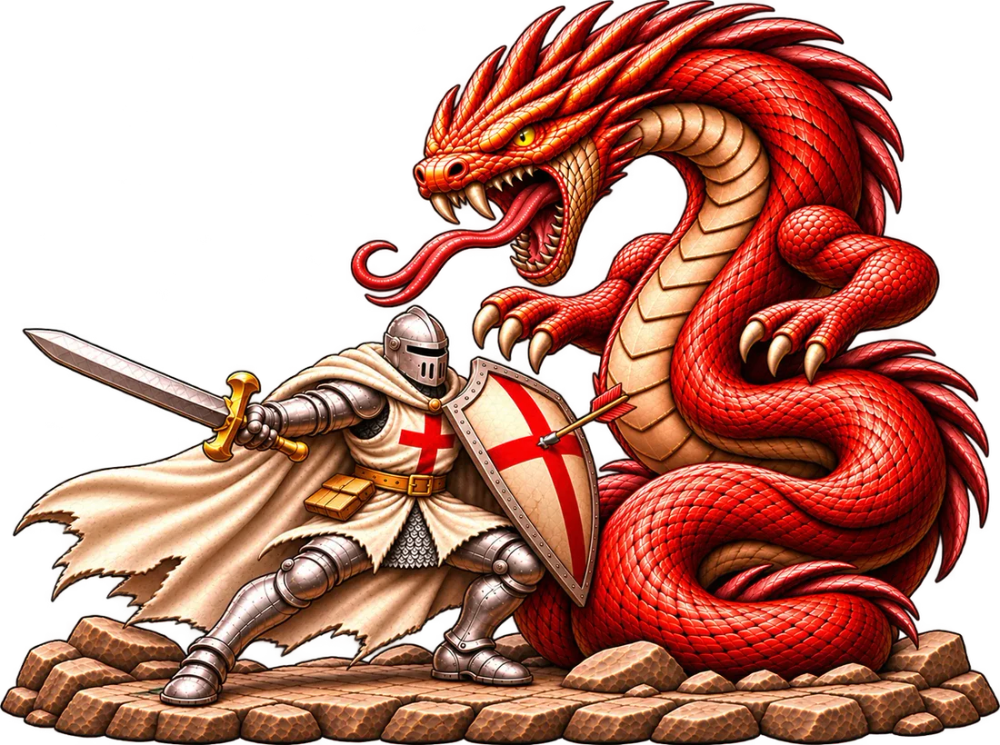

Forje versículos
Encontre os livros dourados escondidos nos ídolos e complete as palavras que faltam na forja. Quanto mais você forja, mais forte fica o golpe.
Um jogo bíblico de plataforma
Forje versículos na sua espada e cale as mentiras dos monstros pelas terras da Bíblia.
Grátis, direto no navegador. Seu progresso fica salvo no aparelho.

Sobre o jogo
Cada monstro carrega uma mentira — “Deus te abandonou”, “a Bíblia é só um livro antigo”, “curve-se ao bezerro de ouro”. A espada sozinha não basta: escolha o versículo certo para refutar a mentira e a lâmina se acende com o poder da Palavra.
Encontre os livros dourados escondidos nos ídolos e complete as palavras que faltam na forja. Quanto mais você forja, mais forte fica o golpe.
O versículo certo acende a espada com a cor do tema. Os Dez Mandamentos viram um martelo dourado que voa girando.
Erga o escudo contra o fogo e as mordidas, e avance com o impulso do Espírito atravessando os inimigos.
Cada jornada esconde uma ovelha fora do caminho. Ache-as, ganhe experiência e suba de nível para ter mais vida.
“Porque a palavra de Deus é viva e eficaz, e mais penetrante do que qualquer espada de dois gumes.” Hebreus 4:12
A primeira jornada começa no Egito. Forje o seu primeiro versículo e enfrente a primeira mentira.
Jogar no navegadorTeclado (A/D andar, W pular, K atacar, J escudo, L Espírito) ou toque na tela.